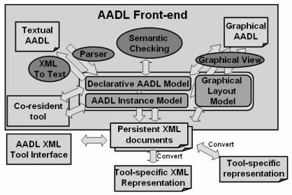

Previous
Next
Previous
Next 
| 1. Scope |
This annex defines the AADL meta model and XML-based
interchange formats for AADL models.
The AADL meta model defines the structure of AADL models, i.e., an object representation of
AADL specifications that corresponds to a semantically decorated abstract syntax tree. The
object representation of AADL models can be manipulated programmatically through an API. The
object representation of AADL models can also be persistently stored as XML documents in a
standard interchange format. This permits different tools that support the AADL XML schema [XML
2001] or XMI meta model specification [XMI 2003] to interoperate on AADL models. Both the XML
schema and the XMI meta model specification for the AADL are derived from the AADL meta
model, thus, the two representations are consistent with the meta model.
The three model representations and persistent XML formats of AADL models defined
in this annex
are:
- A declarative AADL model: AADL specifications in the form of component types, component implementations, port group types, annex libraries, packages, and property sets.
- An AADL instance model: A compact representation of a system instance whose root is a system implementation in an AADL specification. This model contains AADL properties required for further analysis and processing. Declarative information is accessible, if needed, through cross-document references to the declarative model.
- A graphical layout model: Layout information for the graphical display of AADL models. The graphical layout representation is associated with AADL models in their declarative model and instance model.

Figure 1 AADL Models and Tools
Figure 1 shows the three model representations and their
roles with respect to the textual and
graphical AADL representation as well as to tools that process and analyze AADL models.
The declarative AADL model reflects AADL specifications
and supports translation to and from the
textual AADL representation. A parser translates AADL text into a declarative AADL model.
Name resolution, semantic checking and other static analysis can be performed on this in-core
object model of the declarative AADL model. The emphasis of the declarative model representation
is to maintain the declarative structure as defined in the standard. Derived information such
as
features inherited by subcomponents from their component type, subcomponents or connections
inherited by a component implementation from the component implementation it extends, or
property values of subcomponents inherited from property associations declared with the
referenced component type or implementation are not explicitly modeled, but are accessible via
methods that operate on the model. Results of such analysis can be recorded in the declarative
AADL model as property values. This makes analysis results available in a standard format for
other analysis and for generation tools as illustrated in Figure 1. An XML-to-Text converter can
reproduce textual AADL from the declarative AADL model.
The graphical AADL model is supported by graphical editing
tools operating on the declarative
AADL model and using the graphical layout model to maintain relevant layout information about the
AADL model. Graphical presentation of AADL instances is supported in a similar manner.
The AADL instance model reflects an instance of a system
as an instantiation of the application
system and the execution platform based on a system implementation as the root of the system
model. Connections between connections, represented in the declarative model as one or more
connection declarations, are resolved to semantic connections in the instance model. The
declarative AADL model contains information that is relevant to assure the semantic consistency of
AADL models. However, this information is often not needed for model analyses and runtime
system generation. Therefore, this information is not kept in the instance model, but accessible
through references from the AADL instance model objects to the model objects in the declarative
model they are derived from. The AADL instance model is used in the analyses of system
instances. In many cases these analyses require a system model in which application
components are bound to execution platform components. Such analysis tools may operate on an
memory-resident representation of the AADL instance model directly, or they may load an XML
document into memory as part of the analysis process. Alternatively, filters can convert the XML
representation into an analysis tool specific representation. Results from such analysis can be
recorded as properties in the AADL instance model and mapped back into the declarative AADL
model as necessary.
The three models of AADL specifications in this annex
are described by the AADL meta
model. This meta model is the basis of a standard persistent interchange format in XML as well
as
the basis of an in-core object model that results from loading an XML-based model into memory.
The persistent XML representation is specified by an XMI meta model of the AADL and by an XML
Schema. Both these specifications are directly derived from the AADL meta model.
This annex provides a mapping from the AADL meta model
to XML documents as a persistent form
of AADL models. The annex documents the decisions that went into the definition of the AADL
meta model. And it provides a summary of the AADL meta model. The full AADL meta model and
XML/XMI representations are available in an Appendix.